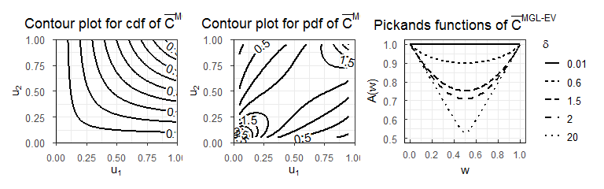

Zhengxiao Li
The goal of rMGLReg is to
provide a nice visualization tool for interpreting the MGL copula and MGL-EV copula, along with its survival copulas.
show the maximum likelihood (ME) estimation method for the copula regression models with/without covariates.
Installation
- You can install the released version of
rMGLRegby running the following lines in R software:
install.packages("devtools")
library(devtools)
devtools::install_github("lizhengxiao/rMGLReg")- To access documentation for all the functions present in the package; for example, enter the command:
- You can see all the installed vignettes in
rMGLRegpackage with
browseVignettes(package = "rMGLReg")Example
Simuation from the MGL and survival copulas
- This is a basic example which shows the normalized scatter plots for (δ = 1.2) with simulated samples of the 3-dimensional MGL copula and survival MGL copula.
library(rMGLReg)
## basic example code
set.seed(271)
n <- 1000
delta <- 1.2
d <- 3
U <- rcMGL.multi(n = 1000, d = d, pars = delta)
cor(U, method = "kendall")
#> [,1] [,2] [,3]
#> [1,] 1.0000000 0.2322282 0.2335576
#> [2,] 0.2322282 1.0000000 0.2138058
#> [3,] 0.2335576 0.2138058 1.0000000
par(pty = "s")
pairs(U, gap = 0, cex = 0.5)
set.seed(271)
n <- 1000
delta <- 1.2
d <- 3
U <- rcMGL180.multi(n = 1000, d = d, pars = delta)
cor(U, method = "kendall")
#> [,1] [,2] [,3]
#> [1,] 1.0000000 0.2322282 0.2335576
#> [2,] 0.2322282 1.0000000 0.2138058
#> [3,] 0.2335576 0.2138058 1.0000000
par(pty = "s")
pairs(U, gap = 0, cex = 0.5)Plots of survival MGL-EV copula
library(data.table)
library(ggplot2)
library(latex2exp)
library(metR)
# joint distribution function of survival MGL-EV copula
n.grid <- 200
par.copula <- 1
xgrid <- ygrid <- seq(0.01, 0.99, length.out = n.grid)
grid <- expand.grid("u1" = xgrid, "u2" = ygrid)
mtrx3d <- matrix(0, nrow = nrow(grid), ncol = 3)
mtrx3d <- cbind(grid,
"pcu1u2" = pcMGLEV.bivar(u1 = grid[,1],
u2 = grid[,2],
param = par.copula)) # evaluate W on 'grid'
mtrx3d <- data.table(u1 = mtrx3d[,1],
u2 = mtrx3d[,2],
pcu1u2 = mtrx3d[,3])
p1 <- ggplot(mtrx3d, aes(u1, u2, z = pcu1u2)) +
scale_x_continuous(expand = c(0, 0), limits = c(0, 1)) +
scale_y_continuous(expand = c(0, 0), limits = c(0, 1)) +
theme_bw() +
ggtitle(TeX('Contour plot for cdf of $\\bar{C}^{MGL-EV}$')) +
theme(axis.line = element_line(colour = "black"),
axis.text.x = element_text(margin = margin(t = 0.25, unit = "cm")),
axis.text.y = element_text(margin = margin(r = 0.25, unit = "cm"),
size = 10,
vjust = 0.5,
hjust = 0.5),
plot.title = element_text(hjust = 0.5)) +
labs(x = TeX("$u_1$"), y = TeX("$u_2$")) +
geom_contour(colour = 'black',
show.legend = TRUE,
bins = 10,
size = 0.8
) +
geom_text_contour(aes(z = round(pcu1u2, 4)), stroke = 0.2)
# joint density function of survival MGL-EV copula
n.grid <- 200
par.copula <- 1
xgrid <- ygrid <- seq(0.05, 0.95, length.out = n.grid)
grid <- expand.grid("u1" = xgrid, "u2" = ygrid)
mtrx3d <- matrix(0, nrow = nrow(grid), ncol = 3)
mtrx3d <- cbind(grid,
"dcu1u2" = dcMGLEV.bivar(u1 = grid[,1],
u2 = grid[,2],
param = par.copula)) # evaluate W on 'grid'
head(mtrx3d)
#> u1 u2 dcu1u2
#> 1 0.05000000 0.05 3.843447
#> 2 0.05452261 0.05 3.702302
#> 3 0.05904523 0.05 3.566294
#> 4 0.06356784 0.05 3.436053
#> 5 0.06809045 0.05 3.311850
#> 6 0.07261307 0.05 3.193728
mtrx3d <- data.table(u1 = mtrx3d[,1],
u2 = mtrx3d[,2],
dcu1u2 = mtrx3d[,3])
library(ggplot2)
library(reshape2)
#>
#> 载入程辑包：'reshape2'NA#> The following objects are masked from 'package:data.table':
#>
#> dcast, melt
library(metR)
p2 <- ggplot(mtrx3d, aes(u1, u2, z = dcu1u2)) +
scale_x_continuous(expand = c(0, 0), limits = c(0, 1)) +
scale_y_continuous(expand = c(0, 0), limits = c(0, 1)) +
theme_bw() +
ggtitle(TeX('Contour plot for pdf of $\\bar{C}^{MGL-EV}$')) +
theme(axis.line = element_line(colour = "black"),
axis.text.x = element_text(margin = margin(t = 0.25, unit = "cm")),
axis.text.y = element_text(margin = margin(r = 0.25, unit = "cm"),
size = 10,
vjust = 0.5,
hjust = 0.5),
plot.title = element_text(hjust = 0.5)) +
labs(x = TeX("$u_1$"), y = TeX("$u_2$")) +
geom_contour(colour = 'black',
show.legend = TRUE,
bins = 15,
size = 0.8,
linetype = 1
) +
geom_text_contour(aes(z = round(dcu1u2, 4)), stroke = 0.2)
# the Pickands dependence function of survival MGL-EV copula
delta.vector <- c(0.01, 0.6, 1.5, 2.0, 20)
k.mat <- matrix(0, nrow = 100, ncol = length(delta.vector))
for(i in 1:length(delta.vector)){
w.vector <- seq(0.0001, 0.9999, length.out = 100)
k.mat[,i] <- Afunction(w = w.vector, param = delta.vector[i])
}
dtplot <- data.table(w = rep(w.vector, times = length(delta.vector)),
delta = factor(rep(delta.vector, each = 100)),
k = as.vector(k.mat))
p3 <- ggplot(data = dtplot,
mapping = aes(x = w, y = k)) +
theme_bw() + xlab(TeX('$w$')) + ylab(TeX('$A(w)$')) +
geom_line(aes(linetype = delta), size = 0.8) +
scale_x_continuous(limits = c(0, 1),
breaks = seq(0, 1, by = 0.2)) +
scale_y_continuous(limits = c(0.5, 1),
breaks = seq(0.5, 1, by = 0.1)) +
ggtitle(TeX('Pickands functions of $\\bar{C}^{MGL-EV}$')) +
theme(axis.line = element_line(colour = "black"),
axis.text.x = element_text(margin = margin(t = 0.25, unit = "cm")),
axis.text.y = element_text(margin = margin(r = 0.25, unit = "cm"),
size = 10,
vjust = 0.5,
hjust = 0.5),
axis.ticks.length = unit(-0.1, "cm"),
plot.title = element_text(hjust = 0.5),
legend.direction = 'vertical',
legend.box.just = "right",
legend.text = element_text(size = 10)
) + labs(linetype = TeX('$\\delta$'))
library(patchwork)
p0 <- p1 + p2 + p3 + plot_layout(ncol = 3)
p0
d = 10-dimensional MGL regression model
# simulated data
set.seed(111)
Nsim <- 1000
n <- 1000 # sample size
beta.true <- c(-0.6, 0.5, 0.2) # true regression coefficients
x1 <- rnorm(n, 0, 1)
x2 <- rnorm(n, 0, 1)
X <- model.matrix(~ x1 + x2) # design matrix
delta.sim <- as.vector(exp(X%*%beta.true)) # true copula parameters
Usim <- matrix(0, nrow = n, ncol = d)
for (i in 1:n){
Usim[i, ] <- rcMGL.multi(n = 1, d = d, pars = delta.sim[i])
}
m.MGLMGA <- MGL.reg(U = Usim, copula = "MGL",
X = X, method = "Nelder-Mead",
initpar = c(-0.32, 0.001, 0.001)
)
m.MGLMGA
#> $loglike
#> [1] 124.6826
#>
#> $copula
#> $copula$name
#> [1] "MGL"
#>
#>
#> $estimates
#> [1] -0.6626620 0.5805884 0.2564613
#>
#> $se
#> [1] 0.09881861 0.07807502 0.06916195
#>
#> $hessian
#> [,1] [,2] [,3]
#> [1,] -185.65734 -143.47722 -63.21761
#> [2,] -143.47722 -275.61829 -36.83389
#> [3,] -63.21761 -36.83389 -231.46060
#>
#> $AIC
#> [1] -243.3653
#>
#> $BIC
#> [1] -228.642